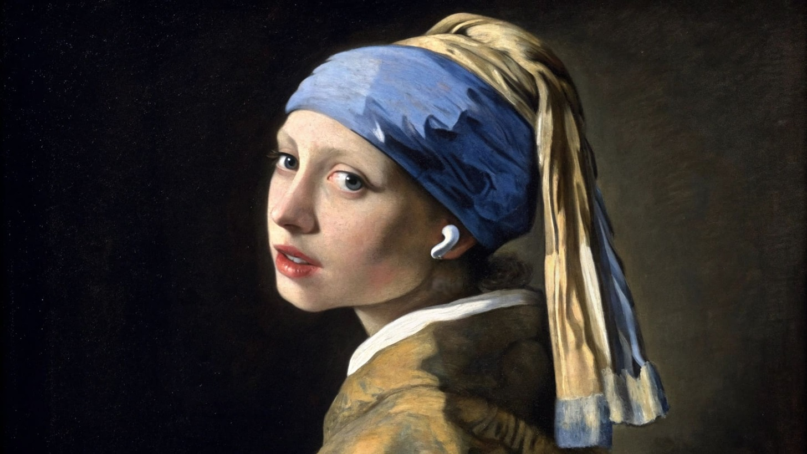
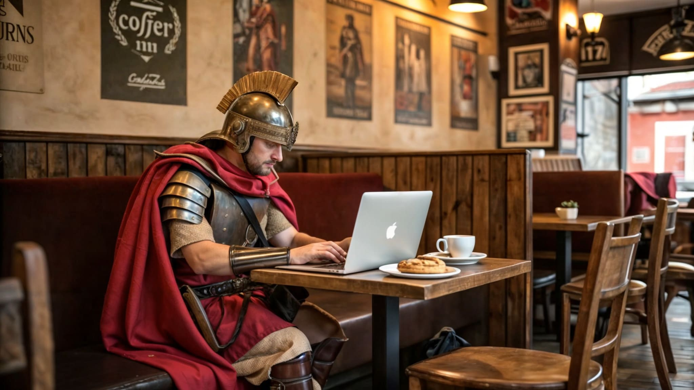
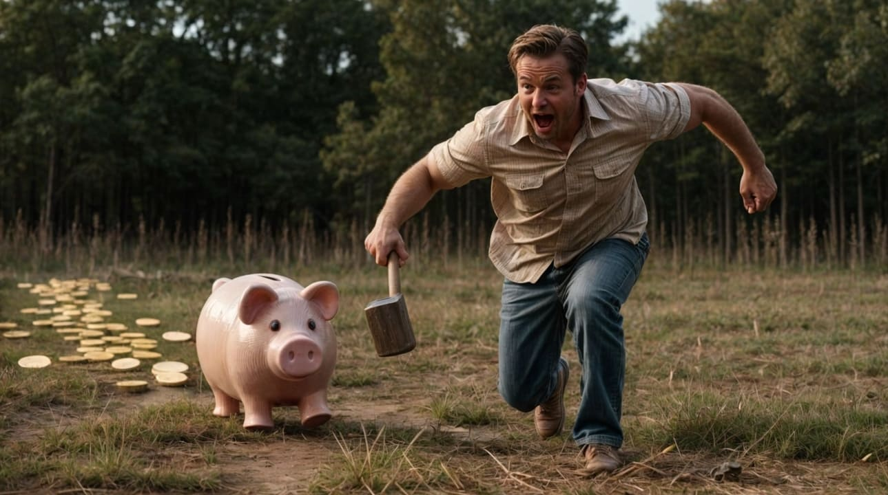

Door zelf software te ontwikkelen, creëer ik tools die precies voldoen aan mijn behoeften, zonder overbodige functies of afhankelijkheid van grote multinationals. Dit geeft me volledige controle over mijn projecten en zorgt ervoor dat mijn gegevens privé blijven. Ik leer coderen op een autodidactische manier, zonder formele opleiding, met behulp van een AI-assistent die fungeert als mijn persoonlijke leerkracht. Deze agentische AI neemt complexe taken uit handen, terwijl ik me richt op de creatieve en functionele aspecten van mijn code. Dit is niet alleen efficiënt, maar ook een vooruitblik op de toekomst, waarin professionals steeds vaker samenwerken met intelligente assistenten.
"TarjetApp" is een webapp die muziek en flashcards combineert om talen te leren. De app gebruikt een API-sleutel om songteksten naar een taalmodel te sturen, waar ze worden opgesplitst in zinnen en omgezet in interactieve flashcards met vertalingen. Daarnaast heeft de app een ingebouwde muziekspeler, zodat je tijdens het luisteren de flashcards kunt gebruiken als studiemateriaal. Dit maakt taal leren leuk en aangenaam.
"Gentle" is een community-serviceproject dat buurtbewoners samenbrengt om hulp te vragen en aan te bieden. Met een eenvoudige pin op een interactieve kaart kunnen gebruikers hun adres markeren en aangeven of ze hulp zoeken of willen bieden. Dit platform is er voor mensen die met specifieke problemen worstelen en geen directe hulp in hun omgeving kennen, én voor goede buren die bereid zijn een handje te helpen.

Lens is een portfolio van AI-gegenereerde en bewerkte foto's, waarbij sociologische metaforen centraal staan. Dit project combineert mijn kennis van AI, sociologie en webontwikkeling. Lens biedt een bijzondere blik op de wereld door de lens van technologie en menselijke interactie, en laat zien hoe kunst en wetenschap samenkomen in visuele verhalen.
"Resonance" is een portfolio van AI-gegenereerde muziekstukken, waarin muzikale creativiteit en technologie samenkomen. Deze webapp toont mijn unieke composities die zijn gecreëerd met behulp van geavanceerde AI-algoritmen. Naast het tentoonstellen van mijn werk, biedt Resonance ook een ingebouwde muziekspeler waarmee je je eigen muziek kunt afspelen.
"Hermes" is een Chrome-extensie die je helpt om efficiënter en interactiever te browsen. De extensie stelt je in staat om uitleg te vragen en te chatten met webpagina's. Ingebouwde prompts en "scrolls" maken het mogelijk om webpagina's samen te vatten, complexe informatie eenvoudig uit te leggen, en handige taken uit te voeren. Dit maakt je online ervaring een pak efficiënter.

"Laconica" is een Chrome-extensie die webpagina's samenvat. Hiermee kun je tientallen pagina's samenvatten en ze in een handige lijst bekijken. Ideaal als je snel een korte samenvatting nodig hebt of wilt bepalen of je het volledige artikel wilt lezen. Elke samenvatting krijgt een eigen chatomgeving, zodat je vragen en verduidelijkingen kunt stellen over de inhoud van de pagina's.
ScreenSnap is een Chrome-extensie die met een druk op de knop of een sneltoets automatisch een screenshot maakt zonder tool- en taakbalken. Handig voor tijdelijke foto's. De extensie slaat screenshots op in een map naar keuze en toont een lijst van alle opgeslagen foto's. Een ingebouwd taalmodel herkent de inhoud en genereert een korte omschrijving. Je kunt snel door je screenshots bladeren en eerdere opnames eenvoudig terugvinden.

Braavos is een budgetteringsapplicatie die je lokaal op je computer kunt installeren. Het laat toe je volledige nettowaarde bijhouden, al je aankopen en uitgaven registreren, en je inkomens zoals loon, bijverdiensten en investeringen beheren. Daarnaast kun je je vastgoed en andere bezittingen bijhouden. De app biedt budgetteringsopties waarmee je doelen kunt stellen en je voortgang kunt volgen.
Represent is een fitness tracker die gebruik maakt van coco-ssd via je webcam om je lichaamspositie te tracken en te herkennen. Coco-ssd is een technologie voor objectherkenning die je bewegingen nauwkeurig analyseert. Hierdoor kan de tracker automatisch je sets en reps bijhouden tijdens je workout. Het is als een persoonlijke fitnessinstructeur die je voortgang nauwkeurig monitort.

Hier komt mijn volgende project zodra het klaar is.
{kind=link}
{kind=link}
{kind=link}
{kind=link}
{kind=link}
{kind=link}
{kind=link}
{kind=link}
{kind=link}